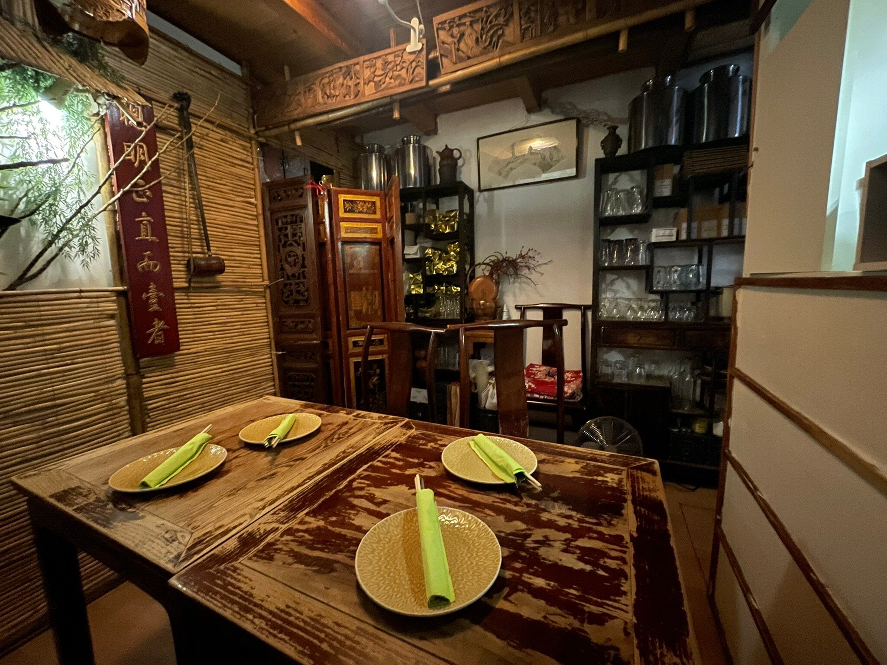
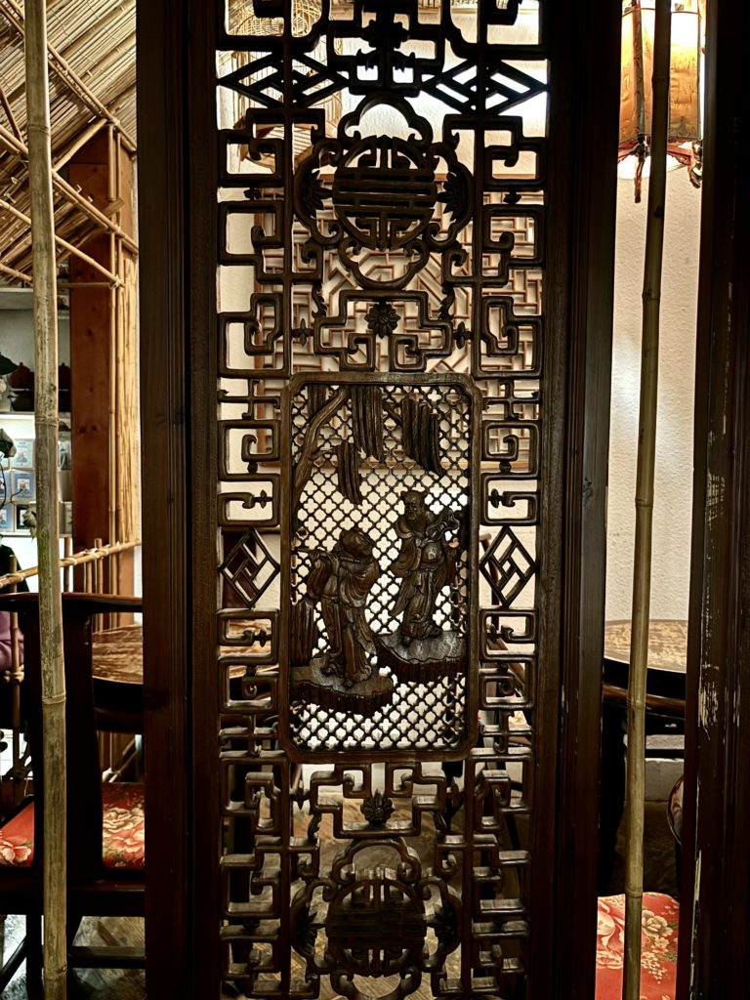
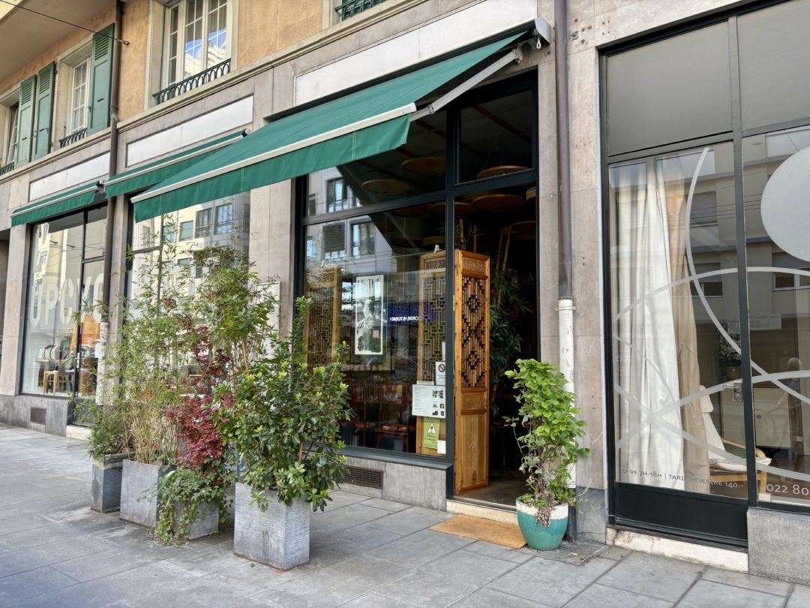
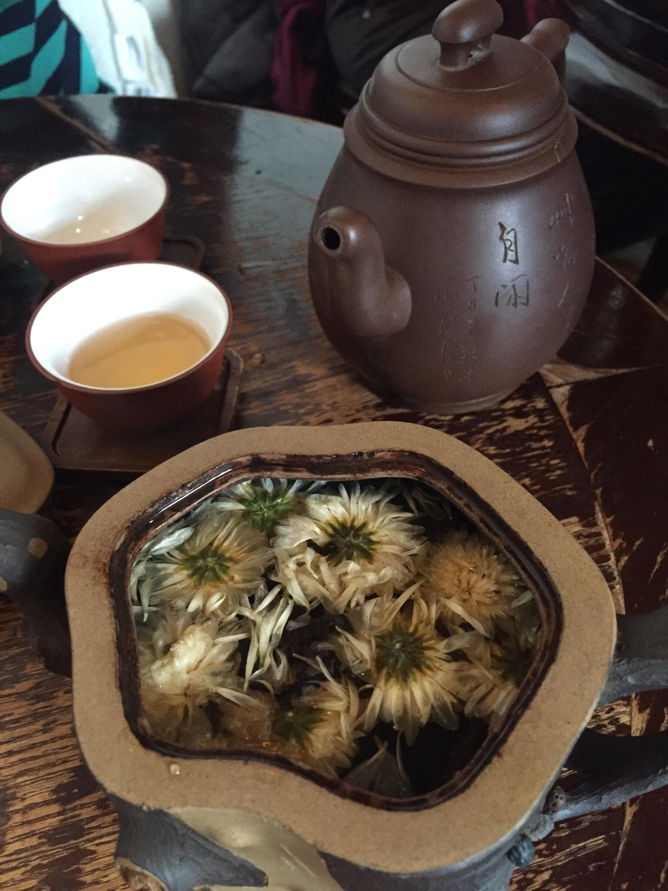
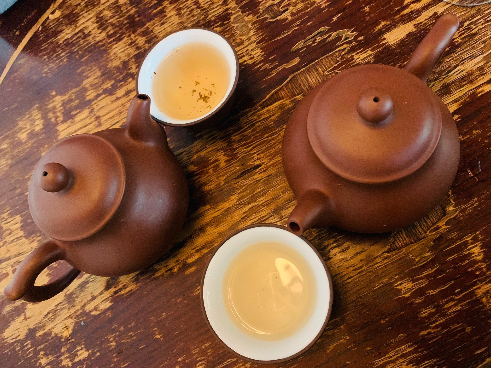

La maison
Un coin de Chine,
rue des Bains
Le Thé tient dans une salle minuscule : neuf tables, une canopée de bambou, des écrans de bois sculpté et des théières de terre pourpre à chaque mur.
Monsieur Lam, d'origine sino-vietnamienne, est architecte de formation devenu spécialiste du thé. Il a réuni ici plus de cent thés de Chine et signé Légendes du thé, un livre où il raconte la légende attachée à chacun. Son épouse, d'origine sino-malaisienne, prépare elle-même les crêpes au pandan.
Depuis 1994, on y vient pour des dim sum faits à la main et le rituel du yam cha. L'adresse est confidentielle et souvent complète : mieux vaut réserver.
1994
Une institution depuis
100+
Thés de Chine
≈9
Tables seulement
30+
Sortes de dim sum




